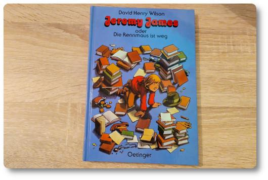

Seit einiger Zeit versuche ich, den Bücherschrank in meinem ehemaligen
Kinderzimmer auszuräumen. Dabei ist mir ein Kinderbuch in die Hände
gefallen, welches ich im Alter von etwa 10 Jahren geschenkt bekommen
habe: "Jeremy James oder Die Rennmaus ist weg".
Das Buch kam 1991 auf den deutschen Markt. Es wurde vom englischen Autor
David Henry Wilson, Jahrgang 1937 geschrieben - und es regt mich auf!
Schon vor dreißig Jahren konnte ich es nicht leiden. Aber jetzt hab ich
es nochmal gelesen und meine Abneigung wurde nur noch größer. Aber nicht
gegen den Autor. Sondern gegen den Buchverlag. Und die Buchhandlung in
einer mitteldeutschen Kleinstadt, wo man meiner Mutter dieses Buch kurz
nach der Wende aufgeschwatzt hat.

Bei Jeremy James handelt es sich um einen Jungen, der in England lebt,
und dort ganz alltägliche Geschichten erlebt. Der Erzählstil hat dabei
einen zwinkernden Unterton, den ich als unbedarftes Dorfkind nicht
verstand. Zum Beispiel war mir fremd, warum die Leute Angst vor einer
Maus haben. Oder warum eine Spinne in der Badewanne als üble Bedrohung
beschrieben wird. Hä? Sowas juckte mich überhaupt nicht. Und was sollte
das für ein Junge sein, der mit einer Spinne ein Problem hat? Seltsam,
sehr seltsam.
Der Klappentext preist den Autor für Humor und Witz – ich hingegen fand
das Buch rätselhaft und frage mich heute eher, ob es nicht ein
Kinderbuch für Erwachsene ist.
Naja. Mir hat sich die Welt in diesem Buch nie wirklich erschlossen.
Vielleicht auch, weil ich damals mit den Orten in diesem Buch nichts
anfangen konnte und warum die Personen so komische Namen hatten ("Mrs.
Small". "Mrs. Smyth-Fortescue", etc.). Und warum sie sich so komisch
verhielten. Zum Beispiel war ein Telefon für Jeremys Vater ein
"Mist-Ding". Aber für mich war es damals ein Wundergerät, mit dem ich
meine 30 Kilometer entfernt wohnende Oma anrufen konnte.
Oder auch hier: Gleich in der ersten Kurzgeschichte geht es um eine
Zugfahrt nach Castlebury . Castle-was? Noch nie gehört. Damals und heute
nicht. Ist das weit weg? Was für ein Zugticket braucht man wohl dahin?
In welchem Teil von Deutschland soll das genau liegen? Ohne einführende
Worte war das alles irgendwie komisch... Alles Fragen, die mein
neugieriges Ich nicht beantwortet bekam.
Auch die Gedankenwelt des Protagonisten Jeremy James war für mich als
Kind nicht nachvollziehbar. Ja, die Gedanken von Kindern können sehr
seltsam sein, wenn sie viel Fantasie haben. Aber diese Gedankenwelt war
eben nicht meine und ich hab nicht verstanden, warum er manche Dinge so
denkt...
Zum Beispiel war es mir total fremd, warum Jeremy James glaubte, dass
der Lokführer tot sei, nur weil der Zug, in welchem Jeremy saß, ohne
anzuhalten an einem Bahnhof vorbei gefahren ist - und Jeremy daraufhin
die Notbremse zieht! Mein Gott - was für ein dämlicher Altersgenosse!!!
Später hat sich der Tod des Lockführers in der Geschichte natürlich als
falsch herausgestellt. Ich hab mich jedenfalls als Kind für Jeremys
Verhalten richtig fremdgeschämt.
Auch die zweite Geschichte entzog sich meinem Verständnis. Denn wie der
Zufall es wollte, hat der Vater von Jeremy einen Freund, der Mitarbeiter
beim Theater ist. Sein Vater nimmt Jeremy also mit zu diesem Freund im
Theater, weil beide etwas Dienstliches zu besprechen hatten. In der
Zwischenzeit sollte sich Jeremy im Vorzimmer die Zeit vertreiben. Es
kommt wie es kommen muss: Jeremy wird es langweilig und er erkundet das
Gebäude. Nach kurzen Umwegen befindet er sich plötzlich auf der Bühne
einer laufenden Theatervorstellung wieder, bei der gerade die berühmten
Sätze "Sein oder nicht sein!" fallen! Ja, es war eine
Shakespeare-Vorstellung. Mein 10-jähriges ich hat hier gar nichts
begriffen - ich wusste nicht, was "sein oder nicht sein" bedeutet, ich
hatte ja keine Ahnung von Shakespeare und die Welt des Theaters war für
mich auch noch sehr fremd. Im Buch aber flippten gerade alle Leute aus.
Hab ich irgendwas verpasst? 🫤
Nein, nein, nein. So ein Buch hätte man vielleicht erst einmal Kindern
ab 10 Jahren zum Probelesen geben sollen, bevor man es in den Verkauf
gibt, dazu noch in einer mitteldeutschen Buchhandlung kurz nach der
Wende. Zu diesen Geschichten hier hatte ich keinen Bezug und hätte statt
dessen lieber Geschichten gelesen, die mir vertrauter erschienen oder
bei denen es wirklich was zu lachen gab. 😜